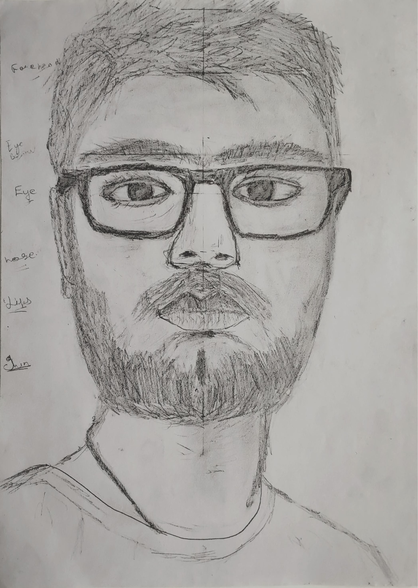

WHO AM I

Sketching is my passion.
I see beauty in all things,
and I sketch what I see.
Sketching is my beloved hobby. I love nothing more than creating
stunning portraits, capturing still life, and sketching birds in their
natural glory. Though my canvas is often the back of a random paper
copy, I push through to make some true works of art. And, as I
continue on my artistic journey, I can't wait to make even more
beautiful masterpieces!